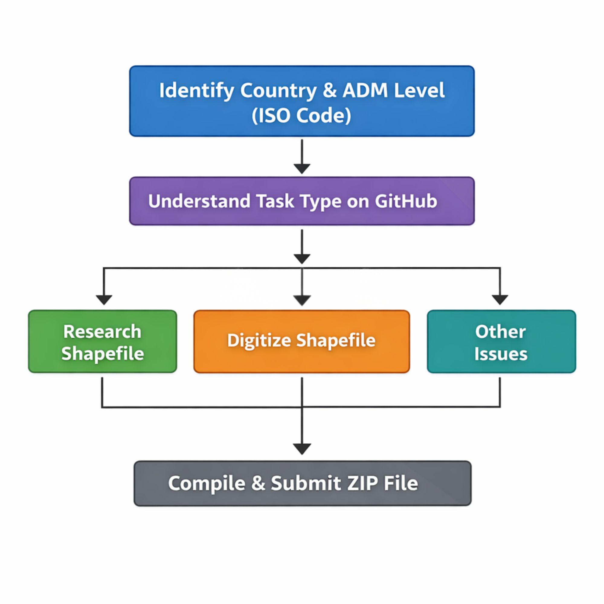

End-to-End Pipeline for geoBoundaries
Using GitHub
Tasks are located on GitHub and are called “issues”.
Overview of Issue Workflow

- Identify the country and administrative division (ADM level) using ISO codes.
- Understand the task type on GitHub.
- Follow the corresponding detailed guide:
- Research a shapefile
- Digitize a shapefile
- Other issues
- Compile the completed files into a zip file and submitting
Identifying the country
Finding ISO Codes
An ISO Code is a standardized, unique, short identifier for countries that is established by the International Organization for Standardization.
The issue title indicates the country and administrative division level.
Example: VNM_ADM2 → VNM = Vietnam, ADM2 = administrative division level 2.
Here is the official ISO website that allows you to search up a country and its corresponding ISO code.
Understand the task type
There are usually three possible scenarios that contributors can be tasked with.
- Researching a new source of data with an accurate license.
- Digitizing a boundary in ArcGIS Pro or QGIS.
- Quick fix issues such as typos or polygon fixes.
Researching Boundaries
General Searching Tips
- Research background info on the country (number of divisions, ADM names)
- Use search terms like: "country name shapefile administrative division"
- Utilize government websites, census bureaus, and national mapping agencies
- Try searching in the local language
Sources to Avoid (License Issues)
-
Avoid these common sources due to license issues:
- GADM
- earthworks.stanford.edu
- maps.princeton.edu
- geodata.lib.berkley.edu
- Open Street Map
- humdata/hdx
Avoid any license that contains “sharealike.”
License Information
Note: This list is not comprehensive. Notify the team if a new license type is found.
If the License Is Unclear
- Contact the data owner for permission
- Use the permission tracking template provided
- If the owner responds and affirms the data's usage, save the correspondence in the zip file for the boundary, as it is proof that the data can be used.
In order to continue the process of boundary research, up to this point a valid boundary would contain:
- A license that is appropriate for all uses (commercial, educational...)
- A source that we are able to provide, who geoBoundaries does not supply boundaries for.
- Relevant boundary information that would update the boundary in comparison to the one geoBoundaries already has.
After all of these requirements are met, then the shapefile should be downloaded and verified for complete accuracy.
Checking the Shapefile
Download the shapefile
- Right-click the
.zipfolder and select Extract All from the top ribbon. - Choose a location on your computer where the files will be saved.
- After extraction, navigate to the folder and confirm that the individual files are present.
- Verify that the file
filename.shpexists.
Extract the shapefile data
- Open the extracted folder.
- Confirm that all files are present (
.shp,.dbf,.shx, etc.).
Open ArcGIS Pro or QGIS
- Select the Blank Map option.
- Name the project using the format:
ISO_ADM# - Example:
VNM_ADM2
Add the shapefile to the map
- Click Add Data in the top ribbon.
- If the button is not visible, select the Map tab first.
- In the dropdown menu, choose Data.
- Navigate to the folder containing the extracted shapefile.
- Select the
.shpfile and click OK.
Project the shapefile
- Start here if you have digitized your file.
(Start here if you have digitized your boundary instead of downloading an existing shapefile.)
A map projection is the way in which a boundary is represented on a sphere. Different types of projections have different strengths and weaknesses in terms of portraying a boundary accurately (all have some sort of distortion; it’s impossible to represent the spherical earth on a 2D surface without distortion).
- Hit the Analysis button on the top ribbon. Then click Tools (the red toolbox).
- A pane will appear on the right side with a search bar. Type Project into the search bar. The Project tool will appear. Click it and select the options in this order:
Geographic Coordinate Systems → World → WGS 1984.
The WGS projection is the projection we use for all shapefiles, so it’s important that projections are standardized. - You’ll have the option to rename the new projected shapefile (the function creates a completely separate layer). Name it
CountryADMX_projected
Example: Belgium ADM4 →BelgiumADM4_projected.
Make sure to save the new layer in the folder you created on the computer. - Once the projection and output location are set, click Run in the bottom corner of the pane.
Insert photo of projection steps
Checking the attribute table
After completing the digitizing steps, ensure there are the same number of features as there are supposed to be subdivisions for your given country.
- Navigate to the attribute table insert screenshot of attribute table guidance
- Edit the Fields of the attribute table
- Ensure the following fields exist in the attribute table:
- Name (Text type, length = 50)
- ISO Code (Text type, length = 50)
- ADM Level (Text type, length 50)
- Object ID
- Shape
To add a field, click the Add Field button in the ribbon near the bottom of the pane and create the fields according to the required criteria.
Delete unnecessary fields
Right-click the green box to the left of the field name and select Delete.
Remove all fields that are not required, then save your progress.
Populate the fields
Return to the original attribute table.
The fields you created will be empty. We will populate them using the Calculate Field tool.
- Click the field you want to populate.
- Click Calculate Field at the top of the attribute table.
- The Calculate Field pane will appear.
Step 1: Populate the Name field
- In the Field Name dropdown, select
Name. - In the expression area (
Name = ____), build the expression by copying the existing field that contains the administrative division names. - Double-click the original field containing the division names.
- The expression will automatically populate.
- Click Run.
Step 2: Populate ISO_Code
- In the Field Name dropdown, select
ISO_Code. - This field is not copied from another column. Instead, we assign the same ISO code to every row.
- In the expression area (
ISO_Code = ____), type the country's ISO code in quotes.
Example:
Now that all fields are populated in the Attribute Table: - Order the fields in this order: Object ID, Shape, Name, Level, ISO_Code - Click on the title of the column and drag to relocate the fields. insert final attribute table example
Saving and Exporting the Shapefile
- Now that the file is standardized and complete, we can export it.
- SAVE YOUR MAP! Hit the icon in the top left with the purple rectangle.
- Right click the name of the final shapefile in the LEFT pane, hover over “Data”, then hit “Export Features”.
- A pane will appear on the right. The “Output Location” is where the file will be saved. Be sure the output location is a folder on your computer and NOT a location ending in “.gbd”. The “Output Name” name must be “ISOcode_ADMX”. No need to mess with the field map.
- Hit “Ok” insert photo of the export features
- Save your map and quit ArcPro
- Preparing the file for GitHub and Uploading to GitHub
If you cannot find an acceptable license or usable data online, you may digitize the boundary, using the following steps.
Digitizing
Digitizing is the process of converting features from an image into digital vector data (a polygon).
If an acceptable licensed shapefile is not found, follow these steps:
Digitizing Steps
Finding an Image to Georeference
To start digitizing, find an image with the boundary you need. Common options:
- Wikimedia – check the license.
- Google Images – ensure the source license is acceptable.
Georeferencing the Image
- Open ArcGIS Pro or QGIS, create a Blank Map.
- Name the project
ISO_ADM#. - Add the image:
- Click Add Data → Data (or open the Map tab).
- Navigate to the folder with the image and select it.
- The image may appear in the middle of the ocean — this is normal.
- Go to Imagery → Georeference. Tools to use: Fit to Display, Move, Scale, Rotate.
Adding Control Points
- Click Add Control Points in the Georeference tab.
- Click a point on the image and align it with the basemap.
- Repeat along the border.
- Tip: Make the image partially transparent to align more easily.
- After adding points: Transformation → Adjust → Save → Close Georeference.
Digitizing the Boundary
- Open Catalog Pane → Folders dropdown.
- Right-click your project folder → New → Shapefile.
- Feature Class Name
- Geometry Type (Polygon / Polyline)
- Coordinate System:
WGS 1984 - Edit tab → Create → select feature → trace along boundary.
- Double-click to close polygon.
- For neighboring polygons → use Trace Tool.
Saving Your Work
- Click Save in Edit tab.
- Next steps:
- Project the shapefile → Project the Shapefile
- Complete the attribute table → Checking the Attribute Table
Other Common Issues
- Quick fixes, e.g., correcting typos in boundary names.
- Fixing a polygon to contain another polygon, or not contain another polygon
- Adding polygons to pre-existing boundaries
Tips
- Always double-check the license when updating older files, as previously accepted licenses may now be outdated or no longer allowed.
- Make sure you are submitting the correct file. When renaming files to match the geoBoundaries naming convention, it is easy to confuse the updated file with an older version that has a similar name.
If there is a quick fix in a boundary that does not require researching a new boundary, or digitizing from scratch, follow the proceeding steps:
How to Find and Download geoBoundaries Data from the GitHub
GeoBoundaries source data is hosted on GitHub:
- Navigate to the Source Data repository
- Locate the country and ADM level (alphabetical then ADM order)
- Click the folder and download using View raw or the download button
- Extract all files from the zipped folder:
- Right-click → Extract All
- Save to local folder (OneDrive recommended)
- Drag the
.shpshapefile or.geojsoninto a new ArcGIS Pro or QGIS map - Complete the quick fix.
Clean Up and Submission
Before submitting:
- Ensure shapefile is in the correct geographic projection: 'WGS 1984'
- Check that all of the fields in the attribute table exist including:
- Name
- Level (ADM 0-4+)
- ISO_Code (only for ADM levels 0-1, ADM2+ levels do not have an ISO field because they are too granular)
- Export shapefile with the proper name (ISO_ADM#)
- Take a screenshot of the license with the URL visible, and name it
license.png - Create a new text file for the metadata. Make sure it follows the format described here
- Ensure that the
meta.txtfile and thelicense.pngscreenshot and the shapefile are in the same folder - Compress/zip all files, and ensure the compressed file (zip file) has the same name as the ADM (ex - USA_ADM2) for GitHub submission
Submission via Website
You may submit through the website, or by emailing directly team@geoBoundaries.org with the zipfile. Submit ZIP here